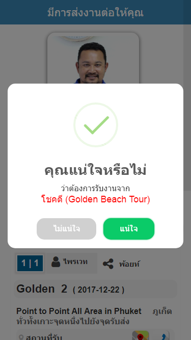

เงื่อนไขการส่งงานต่อ
- ต้องส่งงานก่อนถึงเวลารับแขก อย่างน้อย 15 นาที หรือตามแต่ฝ่ายจัดรถกำหนด
- ต้องเป็นงานที่ยังไม่มีการกดปุ่มจัดการงาน เช่น ถึงสถานที่รับ หรือรับแขกแล้ว
เข้าไปที่เมนูงานวันนี้หรืองานทั้งหมด จากนั้นกดปุ่มส่งงานให้คนอื่น
กรณีนี้คนส่งงานคือ โชคดี (Golden beach Tour)
เลือกบริษัทรถที่ต้องการส่งงานต่อ
เลือกคนขับรถที่ต้องการส่งงาน หรือพิมพ์ชื่อเพื่อค้นหา กรณีที่ต้องการโทรหาให้กดหมายเลขโทรศัพท์
กรณีนี้ผู้รับงานคือ ญา(Golden beach Tour)
ระบบจะแสดงว่าส่งงานจากใครไปถึงใคร พร้อมทั้งแสดงชื่อ และรูปภาพคนขับที่ส่งงานต่อ
จากตัวอย่างจะเห็นว่า
คนที่ส่งงานคือ โชคดี (Golden beach Tour)
คนที่รับงานคือ ญา (Golden beach Tour)
หากต้องการส่งงานต่อให้กดปุ่ม "ส่งงานต่อ" สีเขียว
กดปุ่มใช่หากแน่ใจ กดปุ่มไม่ใช่หากไม่ต้องการส่งงานต่อ
หากต้องการยกเลิกให้กดปุ่ม "ยกเลิก" สีแดง
ระบบจะนับเวลาถอยหลัง 5 นาที เพื่อรอการตอบรับจากคนที่เราส่งงานไปให้
จากตัวอย่างจะเห็นว่าคนที่รับงานคือ ญา (Golden beach Tour)
ญา (Golden beach Tour) จะมีป๊อบอัพแจ้งเตือนว่า โชคดี (Golden beach Tour) ได้ส่งงานมาให้พร้อมทั้งรายละเอียดของงาน (เหมือนหน้าจัดการงาน)
ระบบจะแสดงเวลาที่เหลือในการตอบรับงาน ภายในเวลา 5 นาที
หากไม่ต้องการรับงานให้กดปุ่ม "ปฏิเสธ" สีแดง จะมีป๊อบอัพถามอีกครั้งหากไม่ต้องการรับงานให้กด "แน่ใจ"
ฝั่งโชคดี (Golden beach Tour) จะได้รับข้อความว่าการส่งต่องานถูกปฏิเสธ

หากต้องการรับงานใเห้กดปุ่ม "รับงาน" สีเขียว จะมีป๊อบอัพถามอีกครั้งหากต้องการรับงานให้กด "แน่ใจ"
ฝั่งโชคดี (Golden beach Tour) จะได้รับข้อความว่าส่งต่องานสำเร็จ

งานของ โชคดี (Golden beach Tour) จะถูเปลี่ยนเป็นงานของ ญา (Golden beach Tour) สังเกตได้จากหน้าจัดการงานจะมีปุ่มประวัติการรับงานแสดงอยู่